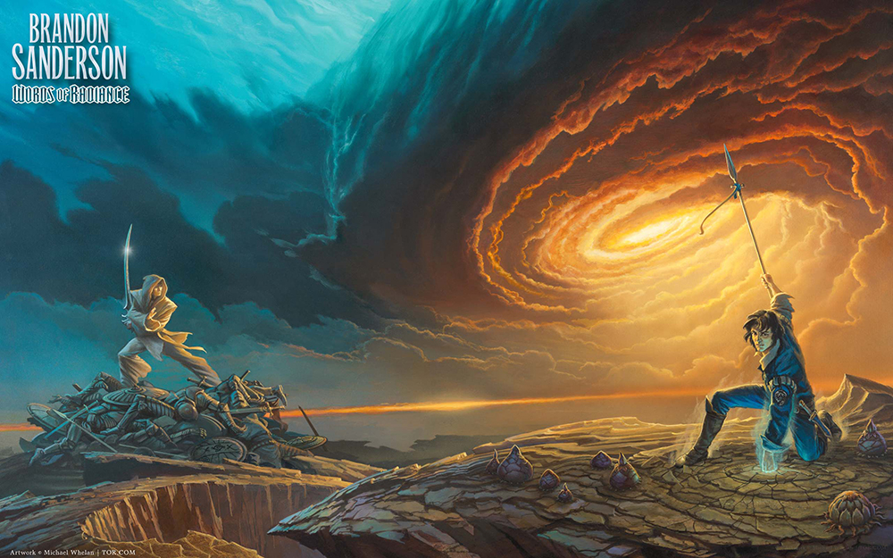

Como estudiante, paso una cantidad importante de tiempo en la semana usando el transporte publico, me gusta leer en el para aprovechar el tiempo
Parte de la lectura es con que nos quedamos de ella, personalemente hay una frase que
me gusta mucho dicha por Socrates
"Yo solo se que no se nada"
Autores que me gustan
Fantasia
Brandon Sanderson, Tolkien, George Martin
Arte del cosmere (univrso de sanderson) realizada por
Michael Whelan
Terror
H.PLovecraft,Oscar Wilde, Edgar Alan Poe
Libros que lei este año
Imperio Final
Pozo de la ascencion
Heroes de las eras
Libros que tengo pendientes por leer
Me gustaria leerlos anets del dia
Trenza del mar esmeralda
Los hermanos karamazov
Juramentada
Como lo dije antes al momento de leer me gusta escuchar Musica
Este es un ejemplo de que me gusta escuchar al leer
si te gustaria leer un poco de Sanderson, te dejo un pequeño pdf
si te interesa, puedes comprarlo directamente usando el boton que ahi mismo se encuentra
Arte del primer libro de su novela "archivo de las tormentas"